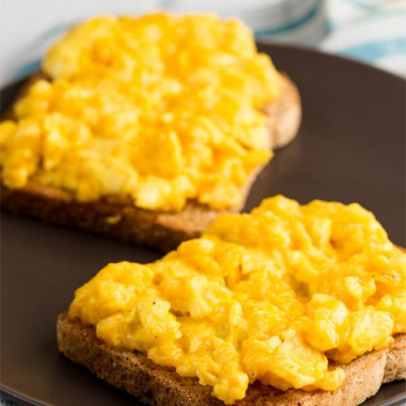

Cheesy Scrambled Eggs
Home

About the recipe!
This is my go-to breakfast for a protein-filled start to
the day. Scrambled eggs are a personal staple of mine
at the moment, because it's such a quick and easy way to
get nutrients that are vital to bulking and building muscle.
Ingredients:
- 3 eggs
- 1 tbsp butter
- Salt and pepper, to taste
- 1/8 cup shredded pepper jack, or similar cheese
- garlic powder, to taste
Steps:
- Add butter to pan and heat to medium.
- Once butter has melted and spread, add eggs,
salt, and pepper, and whisk in pan until consistent.
- Let sit for 30-40 seconds, and whisk again. Repeat
this throughout the process.
- Once eggs are about 50% cooked, add cheese and
small amount of garlic powder, and continue whisking.
The process should take about 3 minutes total.
- Remove from heat and enjoy while hot!